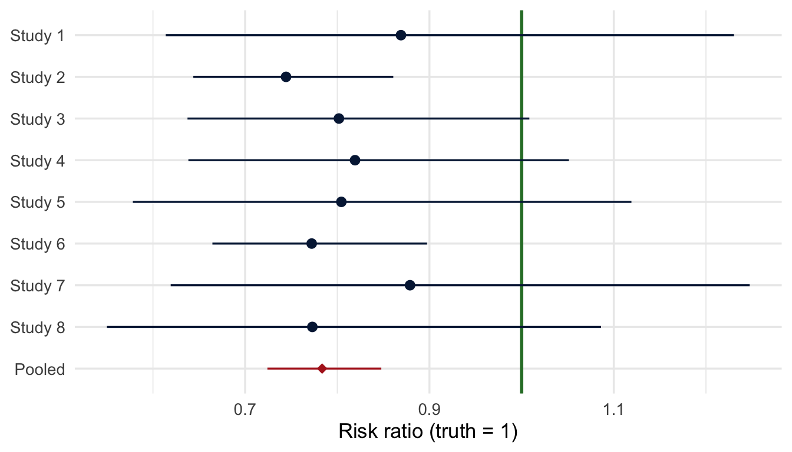
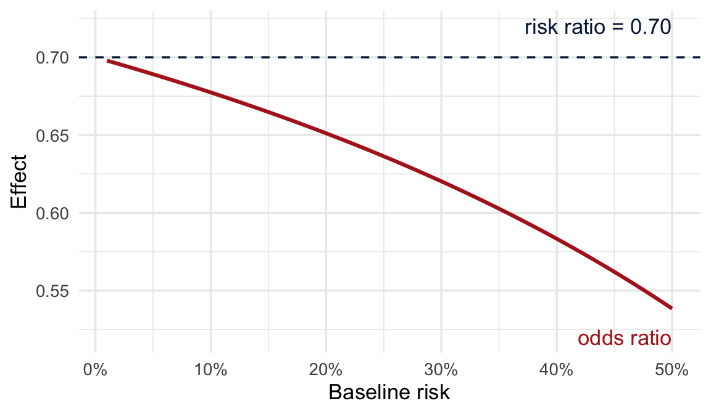
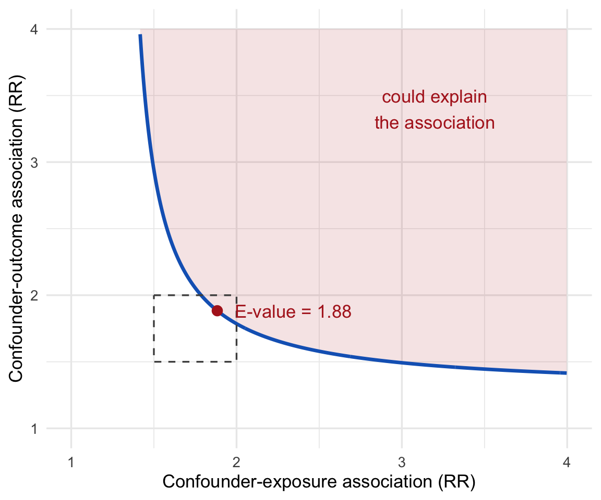
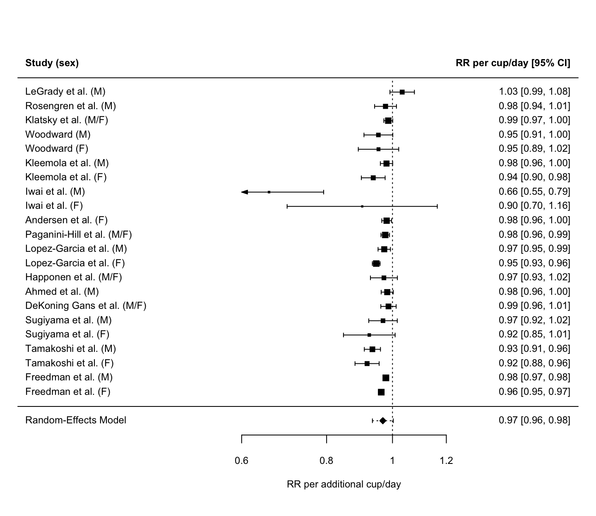
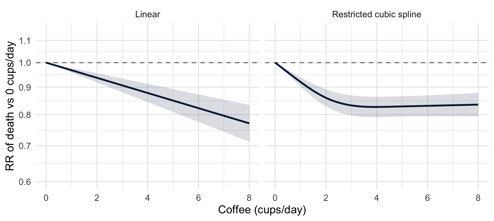

explain why pooling observational studies can give a precise but wrong answer, and why low heterogeneity is no evidence of validity;
recognise the biases that observational studies share, and the problems that pooling adds, such as mixing odds ratios, risk ratios and hazard ratios;
compute and interpret an E-value, and draw the region of confounding strong enough to explain an association away;
present results by risk of bias rather than pooling everything, and decide when not to pool at all;
conduct a dose-response meta-analysis with linear, quadratic, spline and Gaussian-process curves, and explain why a gradient is not proof of causation.
R packages:dplyr, tidyr, purrr, ggplot2, metafor, rms, dosresmeta, knitr.
Many questions can only be answered with observational studies: harms too rare or too delayed for trials, exposures that cannot be randomised, and populations that trials exclude. Systematic reviews of such studies follow the same steps as reviews of trials, but the central threat is different. A trial’s randomisation protects against confounding; in an observational study, confounding is the default. Chapter 5 and Section 7.2 introduced ROBINS-I, healthy-user, immortal-time and selection biases, and target trial emulation. This chapter is about what happens when such studies are combined.
19.1 Pooling does not remove confounding
Code
set.seed(42)k <-8lr <-rnorm(k, log(1.0) -0.25, 0.08) # truth RR = 1; shared bias of about -0.25 on the log scalese <-runif(k, 0.06, 0.18)pooled <-rma(lr, sei = se, method ="REML")tibble::tibble(label =c(paste("Study", 1:k), "Pooled"), rr =exp(c(lr, pooled$b)),lo =exp(c(lr -1.96* se, pooled$ci.lb)), hi =exp(c(lr +1.96* se, pooled$ci.ub)),type =c(rep("Study", k), "Pooled")) |>mutate(label =factor(label, levels =rev(label))) |>ggplot(aes(rr, label, colour = type)) +geom_vline(xintercept =1, colour ="#2E7D32", linewidth =1) +geom_pointrange(aes(xmin = lo, xmax = hi, shape = type)) +scale_colour_manual(values =c(Study ="#041E42", Pooled ="#B22222"), guide ="none") +scale_shape_manual(values =c(Study =16, Pooled =18), guide ="none") +labs(x ="Risk ratio (truth = 1)", y =NULL)

Figure 19.1: Eight simulated studies of an exposure with no effect, all sharing the same healthy-user bias (about 22% apparent protection). The pooled estimate is precise, consistent and wrong.
When every study shares the same bias, pooling narrows the interval around the wrong answer. The studies agree with each other, so I² is low (here 0%): low heterogeneity is not evidence of validity. Healthy-user bias, confounding by indication, sick-stopper bias and immortal time (Section 7.2) are typically shared by most studies of a question, and pooling adds problems of its own:
studies adjust for different confounders, so the “same” estimate means different things in different studies;
odds ratios, risk ratios and hazard ratios are mixed;
what none of the studies measured stays confounded, however many studies are pooled.
The practical rule is to assess each study with ROBINS-I (1), exclude results at critical risk of bias, and present results by risk of bias rather than as a single pooled estimate (2,3).
19.1.1 Mixing odds ratios and risk ratios
Suppose a treatment reduces risk by 30% (RR = 0.70) in every population. When the outcome is rare, the odds ratio is about the same; when it is common, the odds ratio is more extreme.
Code
tibble::tibble(p0 =seq(0.01, 0.5, 0.005)) |>mutate(p1 =0.70* p0, or = (p1 / (1- p1)) / (p0 / (1- p0))) |>ggplot(aes(p0, or)) +geom_hline(yintercept =0.70, linetype ="dashed", colour ="#041E42") +geom_line(colour ="#B22222", linewidth =1.1) +annotate("text", x =0.5, y =0.72, hjust =1, label ="risk ratio = 0.70", colour ="#041E42") +annotate("text", x =0.5, y =0.52, hjust =1, label ="odds ratio", colour ="#B22222") +scale_x_continuous(labels = scales::percent) +labs(x ="Baseline risk", y ="Effect")

Figure 19.2: The odds ratio corresponding to a constant risk ratio of 0.70, as baseline risk increases.
Pooling odds ratios from low- and high-risk populations creates spurious heterogeneity and an estimate that matches neither. When outcomes are common, convert odds ratios to risk ratios using each study’s baseline risk (Chapter 8).
19.2 The E-value
Adjusted estimates from observational studies remain open to unmeasured confounding. The E-value asks how strongly an unmeasured confounder would have to be associated with both the exposure and the outcome, on the risk-ratio scale and beyond the measured confounders, to explain away the observed association (4):
An E-value close to 1 means a weak confounder could explain the result; around 2, a confounder doubling both the exposure and the outcome would suffice; 4 or more requires a very strong confounder. Report it for the point estimate and for the confidence limit closest to the null.
Code
evalue_rr <- \(rr) { rr <-ifelse(rr <1, 1/ rr, rr); rr +sqrt(rr * (rr -1)) }ev <-evalue_rr(0.78); ev_ci <-evalue_rr(0.85) # an illustrative pooled HR 0.78 (0.72 to 0.85)round(c(`E-value, estimate`= ev, `E-value, CI limit`= ev_ci), 2)
E-value, estimate E-value, CI limit
1.88 1.63
The E-value is the symmetric solution of a more general bound. A confounder that is \(RR_{EU}\) times more common among the exposed and raises the outcome risk \(RR_{UD}\) times can bias a risk ratio by at most \(B = RR_{EU}RR_{UD}/(RR_{EU} + RR_{UD} - 1)\)(5). Setting \(B\) equal to the observed RR traces every combination just strong enough to explain the association away.
Code
rr_obs <-1/0.78tibble::tibble(rr_EU =seq(rr_obs +0.01, 4, 0.005)) |>mutate(rr_UD = rr_obs * (rr_EU -1) / (rr_EU - rr_obs)) |>filter(rr_UD <=4) |>ggplot(aes(rr_EU, rr_UD)) +geom_ribbon(aes(ymin = rr_UD, ymax =4), fill ="#B22222", alpha =0.12) +geom_line(colour ="#1565C0", linewidth =1.2) +annotate("rect", xmin =1.5, xmax =2, ymin =1.5, ymax =2, fill =NA, colour ="grey30", linetype ="dashed") +annotate("point", x = ev, y = ev, colour ="#B22222", size =3) +annotate("text", x = ev, y = ev, hjust =-0.15, label =sprintf("E-value = %.2f", ev), colour ="#B22222") +annotate("text", x =3.2, y =3.4, label ="could explain\nthe association", colour ="#B22222") +coord_cartesian(xlim =c(1, 4), ylim =c(1, 4)) +labs(x ="Confounder-exposure association (RR)", y ="Confounder-outcome association (RR)")

Figure 19.3: Combinations of confounder-exposure and confounder-outcome associations strong enough to explain away an observed HR of 0.78 (on and above the curve). Red point: the E-value. Dashed box: a plausible range for healthy-user bias.
The E-value does not say that confounding is present; it says how strong it would have to be. Whether that is plausible requires subject knowledge. Here, people who take preventive drugs also exercise more, smoke less and see doctors more often, and a confounder of the strength in the dashed box would explain much of the association.
19.3 A worked example: statins in primary prevention
For all-cause mortality, randomised trials of statins in primary prevention show about a 10% relative reduction, RR 0.89 (95% CI 0.85 to 0.93) (6). Systematic reviews of observational studies report more: HR 0.86 (0.79 to 0.93) in ten studies of adults aged 65 or more without cardiovascular disease, with the certainty rated very low (7), and HR 0.72 (0.68 to 0.76), with I² of 95%, in 54 propensity-matched studies of mixed populations (8). The usual suspects are healthy users, prevalent users (survivors of early treatment), immortal time, and patients who stop statins when they become frail.
What should a careful review of the observational evidence do? Ten simulated studies, built to resemble a typical review (none is real), illustrate.
Figure 19.4: Ten simulated observational studies of statins and all-cause mortality, coloured by ROBINS-I rating, with pooled estimates for all studies and for moderate-risk studies only.
Code
studies$rob <-as.numeric(studies$robins) # 1 Moderate, 2 Serious, 3 Criticalmr <-rma(yi =log(hr), sei = se, mods =~ rob, data = studies, method ="REML", test ="knha")sub_hr <-sapply(levels(studies$robins), \(r)exp(coef(rma(yi =log(hr), sei = se, data = studies, subset = robins == r, method ="REML"))))
All ten studies give HR 0.82; excluding the critical-risk studies, as ROBINS-I guidance requires, 0.84; the moderate-risk studies alone, 0.86, closer to the trials. Pooled within each category, the HR is 0.86 (moderate), 0.82 (serious) and 0.77 (critical): the more biased the studies, the larger the apparent benefit, itself a signal of bias. A meta-regression on the ROBINS-I score gives a ratio of HRs of 0.95 (0.84 to 1.07) per category; with ten studies it can neither confirm nor exclude the gradient (Section 10.1).
19.3.1 Should the studies be pooled at all?
Table 19.1: A sequence of decisions before pooling observational studies (after (2) and (3)).
Question
If no
If yes
Are populations, exposures, comparators and outcomes similar enough to combine?
Narrative synthesis
Continue
Are any results at critical risk of bias (ROBINS-I)?
Continue
Exclude them from the synthesis
Are all remaining results at low or moderate risk?
Pool with caution; sensitivity analysis excluding serious risk
Pool as the primary analysis
Is the E-value large relative to plausible unmeasured confounders?
Confounding cannot be excluded; say so
Report the pooled estimate with its E-value
Does the result agree with randomised evidence, where it exists?
Prefer the trials; report and explain the discordance
Report the pooled estimate
For statins in primary prevention, the observational estimates are large, precise and “significant”; an unmeasured confounder of plausible strength could explain them; the effect shrinks in the better studies; certainty starts low and is rated down for risk of bias; and the trials show a smaller effect. This is not an argument against statins. It is an argument for using the right evidence for the decision.
19.4 Dose-response meta-analysis
Most observational studies report results for several categories of exposure, not just “exposed” versus “unexposed”. Collapsing them to a binary contrast throws information away, and different studies’ cut-offs give different answers even when the underlying dose-response curve is the same.
Figure 19.5: A hypothetical J-shaped dose-response curve (navy), and the ‘exposed vs unexposed’ risk ratio obtained when four studies define exposure with different cut-offs (coloured lines).
Dose-response meta-analysis uses every category of every study in two steps (9,10):
Within each study, fit a curve through the log RRs against dose. The RRs share one reference group, so they are correlated; the method of (11) reconstructs these correlations from the reported cases and totals, so that the shared reference is not counted several times.
Across studies, pool the study-specific curves with a (multivariate) random-effects meta-analysis.
The shape of the curve must be chosen: linear (one slope), quadratic (one symmetric bend), a restricted cubic spline (a smooth curve that bends where the data say and is linear beyond its outer knots), or a fully flexible Gaussian process. Pre-specify the main shape in the protocol.
19.4.1 Alcohol and cardiovascular disease
The alcohol_cvd data in dosresmeta hold six analyses (four case-control, two cohort) of alcohol intake and cardiovascular disease, each reporting adjusted RRs for three or four drinking categories against non-drinkers.
Code
data(alcohol_cvd)alcohol_cvd |>filter(id <=2) |>select(author, type, dose, cases, n, logrr)
author
type
dose
cases
n
logrr
Bianchi
cc
0.000
126
414
0.0000000
Bianchi
cc
9.060
61
261
-0.2231435
Bianchi
cc
27.000
69
228
-0.0001000
Bianchi
cc
45.000
22
44
0.5306283
Bianchi
cc
64.800
19
34
0.8754687
Bobak
cc
0.000
77
258
0.0000000
Bobak
cc
16.050
88
413
-0.4307829
Bobak
cc
46.425
24
202
-1.0788100
Bobak
cc
77.160
13
64
-0.6161861
Two pairs of these “studies” (Malarcher and Vliegenthart) are wine and beer results from the same study, so the six analyses come from four independent studies. Entered separately, a shared reference group is counted twice, and the pooled interval is too narrow.
Code
knots <-quantile(alcohol_cvd$dose, c(0.1, 0.5, 0.9))rr20 <-function(d) { m <-dosresmeta(logrr ~rcs(dose, knots), id = id, type = type, cases = cases, n = n, se = se,data = d, method ="reml") p <-predict(m, newdata =data.frame(dose =c(0, 20)), xref =0, expo =TRUE)[2, ] tibble::tibble(Studies =length(unique(d$id)), `RR at 20 g/day (95% CI)`=sprintf("%.2f (%.2f to %.2f)", p$pred, p$ci.lb, p$ci.ub))}bind_rows(`All six, as if independent`=rr20(alcohol_cvd),`One per study: wine`=rr20(subset(alcohol_cvd, !id %in%c(4, 6))),`One per study: beer`=rr20(subset(alcohol_cvd, !id %in%c(3, 5))), .id ="Data used") |>kable(align ="lcc")
Table 19.2: Spline-based RR at 20 g/day vs non-drinkers, with the wine and beer analyses of the same studies treated in three ways.
Data used
Studies
RR at 20 g/day (95% CI)
All six, as if independent
6
0.72 (0.58 to 0.90)
One per study: wine
4
0.67 (0.50 to 0.88)
One per study: beer
4
0.78 (0.55 to 1.09)
Before pooling, check what the units of the meta-analysis are: one estimate per study, ideally for total alcohol, chosen by a pre-specified rule, with the alternatives as sensitivity analyses.
Code
fit_dr <- \(f) dosresmeta(f, id = id, type = type, cases = cases, n = n, se = se, data = alcohol_cvd, method ="reml")m_lin <-fit_dr(logrr ~ dose)m_quad <-fit_dr(logrr ~ dose +I(dose^2))m_rcs <-fit_dr(logrr ~rcs(dose, knots))grid <-data.frame(dose =seq(0, 75, 0.5))curve_of <-function(m, label) { p <-predict(m, newdata = grid, xref =0, expo =TRUE) tibble::tibble(dose = grid$dose, est = p$pred, lo = p$ci.lb, hi = p$ci.ub, model = label)}p_quad <-waldtest(Sigma =vcov(m_quad), b =coef(m_quad), Terms =2)$chitest["P"]p_rcs <-waldtest(Sigma =vcov(m_rcs), b =coef(m_rcs), Terms =2)$chitest["P"]
A Gaussian process (GP) places a prior directly on smooth curves, with no knots to choose. With normal likelihoods it can be computed in closed form: the curve \(g(d) = f(d) - f(0)\) has a squared-exponential covariance, the within-study covariances are the same Greenland-Longnecker matrices that dosresmeta uses, between-study heterogeneity enters as a random slope, and the hyperparameters are averaged over a grid weighted by prior times marginal likelihood.
Figure 19.6: Alcohol and cardiovascular disease: four pooled dose-response curves (line and 95% interval). Grey points: study-specific RRs.
The linear model cannot bend, so it cannot show a J-curve. The quadratic and spline curves dip to a minimum around 18 g/day (RR about 0.72) and then rise; the Gaussian process, which is not forced into any shape, shows a shallower dip (minimum RR about 0.81) and no clear rise. All agree on modestly lower risk at 10 to 20 g/day; above about 30 g/day the data are sparse, and at 60 g/day the spline’s interval is 0.38 to 6.94. Tests of non-linearity give P = 0.12 (quadratic) and 0.06 (spline): suggestive, not conclusive. Conclusions about shape should not hinge on one functional form.
19.4.2 Is the J-curve real?
The wider evidence shows why a consistent, dose-dependent association can still be confounded. In 84 cohort studies, drinkers had a lower incidence of coronary heart disease than non-drinkers, RR 0.71 (0.66 to 0.77) (12). But “non-drinkers” include people who stopped because they were ill (“sick quitters”), and moderate drinkers differ from abstainers in income and health; after adjusting for abstainer bias and study quality, low-volume drinkers had no lower mortality than lifetime abstainers, RR 0.97 (0.88 to 1.07) (13). Mendelian randomisation compares groups whose drinking differs because of genetic variants fixed at conception, so these biases cannot operate: carriers of a variant that reduces drinking had lower coronary risk, OR 0.90 (0.84 to 0.96) (14), and in 500,000 Chinese adults genetically predicted drinking increased the risk of stroke and showed no protection against myocardial infarction (15). The dose-response meta-analysis described the shape of the association correctly; it could not say whether the shape was causal.
GRADE allows observational evidence to be rated up for a large effect, a dose-response gradient, or when all plausible confounding would reduce the effect (Chapter 6). Each is a trap: large effects rarely survive honest adjustment (check the E-value); gradients can be confounded, as the alcohol J-curve shows; and confounding that would reduce an apparent benefit is rarely demonstrable. Upgrading needs evidence that the effect is not confounded, such as a Mendelian randomisation study, a natural experiment or a trial, not only a consistent, dose-dependent association.
19.4.3 A second example: coffee and mortality
The coffee_mort data hold 22 dose-response tables from cohort studies of coffee and all-cause mortality, the worked example of the dose-response chapter in (16), re-analysing (17). Some studies use 0.5 or 2 cups/day, not 0, as the reference. A linear model gives one slope per study (log RR per cup/day), which can be pooled like any effect size:
Code
data(coffee_mort)cf_fit <- \(f, d = coffee_mort) dosresmeta(f, id = id, type = type, cases = cases, n = n, se = se, data = d, method ="reml")cf_lin <-cf_fit(logrr ~ dose)cf_slopes <- coffee_mort |>distinct(id, author, gender) |>arrange(id) |>mutate(bi =unname(cf_lin$bi[, 1]), vi =unlist(cf_lin$Si)) # Si holds variancescf_re <-rma(yi = bi, vi = vi, data = cf_slopes, method ="REML", slab =paste0(author, " (", gender, ")"))forest(cf_re, atransf = exp, at =log(c(0.6, 0.8, 1, 1.2)), addpred =TRUE, cex =0.75,header =c("Study (sex)", "RR per cup/day [95% CI]"), xlab ="RR per additional cup/day")cf_pr <-predict(cf_re, transf = exp)

Figure 19.7: Coffee and all-cause mortality: study-specific linear slopes (RR per additional cup/day) and the random-effects pooled slope with its 95% prediction interval.
The pooled slope, RR 0.97 (0.96 to 0.98) per cup/day with a prediction interval of 0.93 to 1.00, assumes every extra cup has the same effect, the first or the eighth. A spline lets the data decide:
Code
cf_knots <-quantile(coffee_mort$dose, c(0.25, 0.5, 0.75))cf_rcs <-cf_fit(logrr ~rcs(dose, cf_knots))cf_kl <-cf_fit(logrr ~rcs(dose, cf_knots), subset(coffee_mort, id ==3)) # one study alonecf_wald <- \(m) waldtest(Sigma =vcov(m), b =coef(m), Terms =2)$chitestcf_grid <-data.frame(dose =seq(0, 8, 0.1))cf_curve <- \(m, label) { p <-predict(m, newdata = cf_grid, xref =0, expo =TRUE) tibble::tibble(dose = cf_grid$dose, est = p$pred, lo = p$ci.lb, hi = p$ci.ub, model = label) }cfc <-bind_rows(cf_curve(cf_lin, "Linear"), cf_curve(cf_rcs, "Restricted cubic spline"))ggplot(cfc, aes(dose)) +geom_hline(yintercept =1, linetype ="dashed", colour ="grey50") +geom_ribbon(aes(ymin = lo, ymax = hi), fill ="#041E42", alpha =0.15) +geom_line(aes(y = est), colour ="#041E42", linewidth =1) +facet_wrap(~ model) +scale_y_log10(breaks =c(0.6, 0.7, 0.8, 0.9, 1, 1.1)) +coord_cartesian(ylim =c(0.6, 1.15)) +labs(x ="Coffee (cups/day)", y ="RR of death vs 0 cups/day")cf_at <- \(m, d) with(filter(cfc, model == m, abs(dose - d) <1e-8), sprintf("%.2f (%.2f to %.2f)", est, lo, hi))

Figure 19.8: Coffee and all-cause mortality: linear and restricted cubic spline dose-response curves (knots at the quartiles of dose).
The linear model keeps promising more benefit with every cup (RR 0.77 (0.71 to 0.83) at 8 cups/day). The spline shows risk falling up to 3 or 4 cups/day (0.83 (0.79 to 0.86)) and then flattening (0.84 (0.79 to 0.88) at 8). One study alone (Klatsky 1993) cannot see the shape (test of non-linearity P = 0.54, absence of evidence rather than evidence of a straight line); all 22 tables can (P < 0.0001).
Again, the curve describes an association. Heavy coffee drinkers smoke and drink more, which pushes the right-hand end of the curve up; people who become ill cut down, which makes the zero-cup reference look worse. A flat plateau could be a real effect or a spurious early benefit and residual harm partly cancelling. Genetically predicted coffee intake was not associated with mortality (18), although caffeine-metabolism genes make coffee a difficult instrument. And every curve is informative only where there are data: the top category is usually open-ended, so “no evidence of harm up to 8 cups” is not “no harm”.
Key points
Pooling studies that share a bias gives a precise wrong answer; low heterogeneity is not evidence of validity.
Assess each study with ROBINS-I, exclude critical-risk results, and present results by risk of bias; a larger effect in more biased studies is itself a signal of bias.
Odds ratios exaggerate risk ratios when outcomes are common; do not pool them indiscriminately.
The E-value states how strong unmeasured confounding would have to be to explain an association; judging its plausibility needs subject knowledge.
Compare observational results with randomised evidence where it exists, and prefer the trials when they disagree.
Dose-response meta-analysis uses every exposure category; its shape depends on the model, so use flexible models and check the units of analysis.
A dose-response gradient can be confounded; Mendelian randomisation, natural experiments or trials are needed before rating observational evidence up.
Exercises
Compute E-values for the statin example using all ten studies and the moderate-risk studies only. How do they compare with the plausible healthy-user range?
In statin-studies, make the critical-risk studies show smaller benefits than the moderate-risk studies. What would that pattern suggest?
Refit the alcohol spline with knots at the 25th, 50th and 75th percentiles of dose. Does the nadir move?
Fit the quadratic model to the coffee data and compare its predictions at 8 cups/day with the spline.
Find a systematic review of observational studies in your field. Does it present results by risk of bias, report an E-value, and compare with trials?
Further reading
(2) and (3) on reviews including non-randomised studies.
Awad K, Mohammed M, Zaki MM, et al. Association of statin use in older people primary prevention group with risk of cardiovascular events and mortality: A systematic review and meta-analysis of observational studies. BMC Medicine [Internet]. 2021;19:139. Available from: https://pmc.ncbi.nlm.nih.gov/articles/PMC8218529/